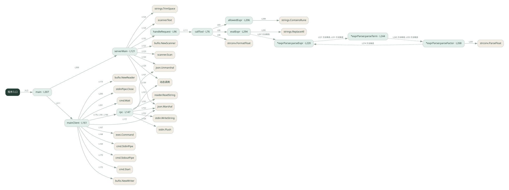

3-3 · 全课程第 43 节
MCP 工具通信入门
040.go
源码快照 f1b8cd4e8e0d · 静态解析 · 2026-09-10
01 / 要完成的事
客户端启动子进程，用标准输入输出传 JSON-RPC 请求，服务端列出并执行工具。
02 / 为什么要做
工具可以运行在独立进程，双方需要约定请求和响应格式。
03 / 当前代码状态
客户端启动当前程序的服务端模式，通过管道传 JSON-RPC；不是在同一函数里假装网络调用。它仍然是最小协议示例。
主要展示本地计算、内存状态或模拟流程；是否写文件/启动子进程请看调用表。 本次只做静态解析，没有运行练习，也没有替你填写或修改原代码。
04 / 调用图
打开大图 ↗实线：源码中的直接调用；虚线：函数引用/注册、动态调用或按方法名推断的候选。L 是调用所在源码行号。箭头不表示执行顺序或每次必经；分支、循环、异步调度及框架内部调用需结合源码。灰色是外部/未解析目标，橙色是动态分发；省略 print、len 和常规容器操作以减少干扰。孤立函数可能尚未接入。

先从 main（程序入口） 出发，沿箭头找到本文件函数，再查看外部调用或动态分发。右侧调用清单保留所有静态调用点，能回到原文件逐行对照。
05 / 函数定位
| 函数 / 定义行 | 职责（源码注释） | 内部调用 |
|---|---|---|
callToolL76 | callTool：真正执行工具（这是 server 的核心逻辑） | fmt.Sprintf, allowedExpr, evalExpr, strconv.FormatFloat |
handleRequestL96 | handleRequest：按 method 分发，返回 result（这就是 MCP 的「协议处理」） | callTool, fmt.Sprintf |
serverMainL121 | serverMain：server 主循环，从 stdin 逐行读 JSON 请求，往 stdout 逐行写 JSON 响应 | bufio.NewScanner, scanner.Scan, strings.TrimSpace, scanner.Text, json.Unmarshal, 动态调用, handleRequest, json.Marshal, fmt.Println, string |
rpcL147 | rpc：发一个 JSON-RPC 请求，收一个响应 | json.Marshal, stdin.WriteString, string, stdin.Flush, reader.ReadString, json.Unmarshal, 动态调用 |
mainClientL161 | 以源码函数体为准；下列调用展示其依赖。 | fmt.Println, exec.Command, cmd.StdinPipe, cmd.StdoutPipe, cmd.Start, bufio.NewWriter, bufio.NewReader, rpc, json.Marshal, fmt.Printf, string, stdinPipe.Close, cmd.Wait |
allowedExprL206 | 以源码函数体为准；下列调用展示其依赖。 | strings.ContainsRune |
*exprParser.parseExprL220 | 以源码函数体为准；下列调用展示其依赖。 | p.parseTerm, len |
*exprParser.parseTermL244 | 以源码函数体为准；下列调用展示其依赖。 | p.parseFactor, len |
*exprParser.parseFactorL268 | 以源码函数体为准；下列调用展示其依赖。 | len, fmt.Errorf, p.parseExpr, strconv.ParseFloat |
evalExprL294 | 以源码函数体为准；下列调用展示其依赖。 | strings.ReplaceAll, p.parseExpr, len, fmt.Errorf |
mainL307 | 以源码函数体为准；下列调用展示其依赖。 | len, serverMain, mainClient |
这样做的优点
模型侧和工具实现可以分离，协议内容可直接观察。
代价与局限
这是协议子集教学实现；不能据此认定完整兼容、可靠并发或具备安全隔离。
适用场景
理解 stdio 与工具发现、工具调用的关系。
不宜直接照搬
直接作为面向不可信客户端的公共工具服务。
动手检验理解
请求一个不存在的工具，观察响应 id 与错误内容是否能对应请求。
有未实现位置时先预测，再补齐验证。能启动不等于逻辑正确。
查看全部 66 个静态调用 / 引用点
| 调用方 | 目标 | 源码行 | 类型 |
|---|---|---|---|
| callTool | fmt.Sprintf | 80 | 调用 |
| callTool | allowedExpr | 83 | 调用 |
| callTool | evalExpr | 86 | 调用 |
| callTool | strconv.FormatFloat | 90 | 调用 |
| callTool | fmt.Sprintf | 92 | 调用 |
| handleRequest | callTool | 111 | 调用 |
| handleRequest | fmt.Sprintf | 117 | 调用 |
| serverMain | bufio.NewScanner | 122 | 调用 |
| serverMain | scanner.Scan | 123 | 调用 |
| serverMain | strings.TrimSpace | 124 | 调用 |
| serverMain | scanner.Text | 124 | 调用 |
| serverMain | json.Unmarshal | 129 | 调用 |
| serverMain | 动态调用 | 129 | 调用 |
| serverMain | handleRequest | 132 | 调用 |
| serverMain | json.Marshal | 139 | 调用 |
| serverMain | fmt.Println | 140 | 调用 |
| serverMain | string | 140 | 调用 |
| rpc | json.Marshal | 152 | 调用 |
| rpc | stdin.WriteString | 153 | 调用 |
| rpc | string | 153 | 调用 |
| rpc | stdin.Flush | 154 | 调用 |
| rpc | reader.ReadString | 155 | 调用 |
| rpc | json.Unmarshal | 157 | 调用 |
| rpc | 动态调用 | 157 | 调用 |
| mainClient | fmt.Println | 162 | 调用 |
| mainClient | fmt.Println | 163 | 调用 |
| mainClient | fmt.Println | 164 | 调用 |
| mainClient | exec.Command | 167 | 调用 |
| mainClient | cmd.StdinPipe | 168 | 调用 |
| mainClient | cmd.StdoutPipe | 169 | 调用 |
| mainClient | cmd.Start | 170 | 调用 |
| mainClient | bufio.NewWriter | 172 | 调用 |
| mainClient | bufio.NewReader | 173 | 调用 |
| mainClient | rpc | 176 | 调用 |
| mainClient | json.Marshal | 177 | 调用 |
| mainClient | fmt.Printf | 178 | 调用 |
| mainClient | string | 178 | 调用 |
| mainClient | rpc | 181 | 调用 |
| mainClient | fmt.Println | 182 | 调用 |
| mainClient | fmt.Printf | 186 | 调用 |
| mainClient | rpc | 190 | 调用 |
| mainClient | fmt.Println | 198 | 调用 |
| mainClient | stdinPipe.Close | 200 | 调用 |
| mainClient | cmd.Wait | 201 | 调用 |
| allowedExpr | strings.ContainsRune | 208 | 调用 |
| *exprParser.parseExpr | p.parseTerm | 221 | 调用 |
| *exprParser.parseExpr | len | 225 | 调用 |
| *exprParser.parseExpr | p.parseTerm | 231 | 调用 |
| *exprParser.parseTerm | p.parseFactor | 245 | 调用 |
| *exprParser.parseTerm | len | 249 | 调用 |
| *exprParser.parseTerm | p.parseFactor | 255 | 调用 |
| *exprParser.parseFactor | len | 269 | 调用 |
| *exprParser.parseFactor | fmt.Errorf | 270 | 调用 |
| *exprParser.parseFactor | p.parseExpr | 274 | 调用 |
| *exprParser.parseFactor | len | 278 | 调用 |
| *exprParser.parseFactor | fmt.Errorf | 279 | 调用 |
| *exprParser.parseFactor | len | 285 | 调用 |
| *exprParser.parseFactor | fmt.Errorf | 289 | 调用 |
| *exprParser.parseFactor | strconv.ParseFloat | 291 | 调用 |
| evalExpr | strings.ReplaceAll | 295 | 调用 |
| evalExpr | p.parseExpr | 297 | 调用 |
| evalExpr | len | 301 | 调用 |
| evalExpr | fmt.Errorf | 302 | 调用 |
| main | len | 308 | 调用 |
| main | serverMain | 309 | 调用 |
| main | mainClient | 311 | 调用 |